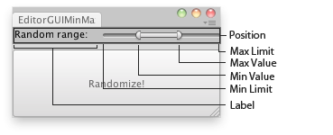

EditorGUI.MinMaxSlider
Obsolete public static void MinMaxSlider(GUIContent label,
Rect position,
ref float minValue,
ref float maxValue,
float minLimit,
float maxLimit);
public static void MinMaxSlider(Rect position,
ref float minValue,
ref float maxValue,
float minLimit,
float maxLimit);
public static void MinMaxSlider(Rect position,
string label,
ref float minValue,
ref float maxValue,
float minLimit,
float maxLimit);
public static void MinMaxSlider(Rect position,
GUIContent label,
ref float minValue,
ref float maxValue,
float minLimit,
float maxLimit);
Parameters
| position | Rectangle on the screen to use for the slider. | |
| label | Optional label in front of the slider. | |
| minValue | The lower value of the range the slider shows, passed by reference. | |
| maxValue | The upper value at the range the slider shows, passed by reference. | |
| minLimit | The limit at the left end of the slider. | |
| maxLimit | The limit at the right end of the slider. |
Description 描述
Makes a special slider the user can use to specify a range between a min and a max.

MinMax Slider in an Editor Window.
using UnityEngine; using UnityEditor;
// Place the selected object randomly between the interval of the Min Max Slider // in the X,Y,Z coords
class EditorGUIMinMaxSlider : EditorWindow { float minVal = -10; float minLimit = -20; float maxVal = 10; float maxLimit = 20;
[MenuItem("Examples/Editor GUI Move Object Randomly")] static void Init() { var window = GetWindow<EditorGUIMinMaxSlider>(); window.Show(); }
void OnGUI() { EditorGUI.MinMaxSlider( new Rect(0, 0, position.width, 20), new GUIContent("Random range:"), ref minVal, ref maxVal, minLimit, maxLimit); if (GUI.Button(new Rect(0, 25, position.width, position.height - 25), "Randomize!")) { PlaceRandomly(); } }
void PlaceRandomly() { if (Selection.activeTransform) { Selection.activeTransform.position = new Vector3( Random.Range(minVal, maxVal), Random.Range(minVal, maxVal), Random.Range(minVal, maxVal) ); } else { Debug.LogError("Select a GameObject to randomize its position."); } } }